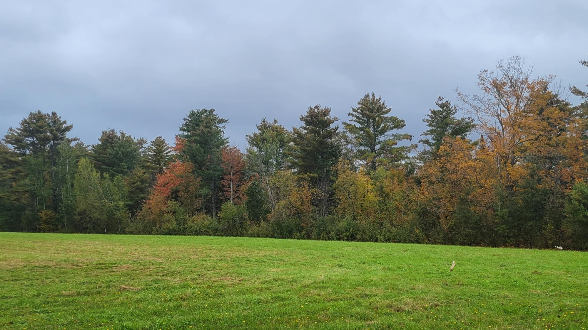

Arbor Custom Analytics LLC
Home
About
Insights
Events
Newsletter
Categories
All
(58)
Accessibility
(1)
Analytics
(10)
Behind the curtain
(4)
Carbon
(13)
Climate
(1)
Covid
(1)
Data visualization
(2)
FIA
(1)
For fun
(1)
Forest analytics
(1)
Forest carbon
(3)
Forest growth and yield
(2)
Forest measurements
(4)
Forest products
(3)
Forestry
(5)
Logging
(1)
NSVB
(1)
Prediction
(1)
Professional development
(1)
Sampling
(1)
Statistics
(6)
Insights
Arbor Custom Analytics website now runs on Quarto
Behind the curtain
The Arbor Custom Analytics website now runs on Quarto, an open source publishing system for sharing information.
Matt Russell
May 9, 2024
A primer on carbon sequestration rates in US forests
Forest carbon
Here’s a primer on forest carbon sequestration values and how much carbon US forests grow on an annual basis.
Matt Russell
Apr 24, 2024
Recapping the Russell 2024 maple syrup season
For fun
The data behind our amateur maple syrup operations.
Matt Russell
Apr 11, 2024
Preliminary thoughts on using the new National Scale Volume and Biomass Estimators
Forest carbon
NSVB
A few initial thoughts on using the new NSVB equations.
Matt Russell
Feb 26, 2024

A quick and easy way to estimate forestland area change across US states
Forest analytics
FIA
How to estimate forestland area change.
Matt Russell
Feb 16, 2024
Are winter temperatures correlated with stumpage prices in Maine?
Forest products
Climate
Looking at the correlation between stumpage prices and Maine winters.
Matt Russell
Jan 24, 2024
New web app shows pandemic assistance to forest products industry by state
Forest products
Covid
Forest products companies and their use of PPP loans and PATHH payments.
Matt Russell
Jan 13, 2024
Most popular blog posts and podcasts in 2023
Behind the curtain
A rundown of the most popular content from this year.
Matt Russell
Dec 22, 2023
Tree measurements on the Rockefeller Center Christmas Tree
Data visualization
Data, measurements, and fun facts about the Rockefeller Center Christmas Tree.
Matt Russell
Dec 17, 2023
A list of R packages for forestry applications
Analytics
A handy list of packages for R users in the forestry community.
Matt Russell
Nov 24, 2023
A handy R function for getting ecological division from FIA data
Some functions from the R’s stringr package to obtain ecological division.
Matt Russell
Nov 18, 2023
How much does adding previous diameter and height growth change FVS predictions?
Forest growth and yield
Comparing non-calibrated out-of-the-box FVS predictions with a calibrated version.
Matt Russell
Oct 31, 2023
Using R and Python to get forest resource data through the EVALIDator API
Analytics
New ways to access FIA estimates through R and Python.
Matt Russell
Oct 25, 2023
Stratifying the number of plots to measure in a forest carbon inventory
Sampling
How to allocate field plots to measure forest carbon under a stratified random sampling framework.
Matt Russell
Sep 22, 2023
Recent updates to tidyverse functions
Analytics
A few key updates from Teaching the tidyverse in 2023
Matt Russell
Sep 14, 2023
Implementing climate adaptive silviculture scenarios in the Forest Vegetation Simulator
Forest growth and yield
A tutorial on adaptive silviculture treatments in FVS.
Matt Russell
Aug 29, 2023
Linear quantile mixed models: applications in forestry
Statistics
LQMM models provide a flexible structure to account for random effects
Matt Russell
Aug 21, 2023
It’s okay to look at the solutions for statistics and data science exercises
Statistics
I had mixed feelings about making the solutions for exercises available to learners.
Matt Russell
Jul 15, 2023
Making R graphs more accessible using BrailleR
Analytics
Data visualization
Accessibility
An R package to make graphs and figures more accessible
Matt Russell
Jun 30, 2023
Quantifying the shade tolerance of climate-adapted tree species in the Northeast
Forest measurements
A look at the shade tolerance of tree species in the northeastern US that are projected to see changes in suitable habitat.
Matt Russell
May 26, 2023
Lorey’s height: the remote sensing way to estimate tree height
Forest measurements
Lorey’s height is a measure of average stand height that is weighted by basal area.
Matt Russell
Apr 21, 2023
Bootstrapped resampling to model tree biomass
Statistics
Bootstrapping works well with messy data and with small samples.
Matt Russell
Apr 12, 2023
How much of Maine’s forests are enrolled in carbon programs?
Carbon
Carbon storage and sequestration is one of the most important attributes that forests provide. Carbon has quickly become a mechanism to address current and future climate…
Matt Russell
Mar 21, 2023
Imputing missing tree heights from a forest inventory
Analytics
Total height is one of the most useful measurements of a tree, but it’s often not measured. This is because measuring heights takes considerable time and effort. While it…
Matt Russell
Feb 17, 2023
Calculating carbon in standing dead trees
Forest carbon
Quantifying the presence and abundance of standing dead trees (SDTs) is notoriously difficult. While live and healthy trees generally appear similar in form and appearance…
Matt Russell
Feb 10, 2023
Forestland on the blockchain: a new prospect for private forest owners
Forestry
In 2021 a 40-acre tract of land in Wyoming was sold and purchased. A land sale like this will not typically make news headlines. But what turned heads about this sale was…
Matt Russell
Jan 5, 2023
Stumpage prices for sawlogs in Maine, 2019-2020
Forest products
Many states provide information on stumpage prices for commonly harvested timber species. This information provides land managers and landowners a sense of what current…
Matt Russell
Dec 23, 2022
Forest carbon cheat sheet: updated for 2022
Carbon
The Forest Carbon Cheat Sheet is a quick reference guide for converting forest carbon measurements and understanding typical carbon values at the tree, stand, and landscape…
Matt Russell
Dec 21, 2022
Doing statistics in the tidyverse: exploring the infer package
Statistics
If you use R software for your data analysis, you are likely familiar with the tidyverse. The
tidyverse
package is a “megapackage” in R that includes several packages that…
Matt Russell
Dec 14, 2022
New updates for tools that query Forest Inventory and Analysis data
Analytics
The US national forest inventory has information contained from over 130,000 forest inventory plots across the country. Data collected and maintained by the Forest Inventory…
Matt Russell
Nov 23, 2022
How to spot poor data analyses
Analytics
Being an excellent data analyst requires you to understand the techniques that go into analyzing data and how to communicate them effectively. While having a foundation in…
Matt Russell
Oct 20, 2022
P-ing in the woods: p-values in forest science
Statistics
The statistics community has had a lot of discussion in recent years about the role of
p
-values and statistical significance. This has led some to question if we’re relying…
Matt Russell
Oct 10, 2022
How many trees make a mass timber building?
Prediction
Mass timber buildings are increasingly being built and have a number of environmental benefits. They are lighter than other common building materials like steel, are fire…
Matt Russell
Sep 27, 2022
Comparing logging trucker wages to other industries
Logging
“To solve any problem in forestry, first figure out where the roads will go.”
Matt Russell
Aug 15, 2022
FVS and CBM-CFS3: Comparing two forest simulation models
Forest measurements
Analysts in the forestry community often turn to models to simulate what a forest will look like in the future. Whether it’s simulating a forest management treatment or…
Matt Russell
Aug 4, 2022
Simple volume to weight conversion for US tree species
Forest measurements
Foresters are accustomed to converting units of measure from one to another. Data are often collected in one unit of measure (e.g., the height of a tree in feet), but need…
Matt Russell
Jul 27, 2022
New book: Statistics in Natural Resources: Applications with R
Statistics
At the start of the pandemic in 2020, I was worried. Not just for the serious global health impacts, but also for the workload I would soon be faced with.
Matt Russell
Jul 20, 2022
A forest carbon data dashboard for Minnesota
Carbon
By total forest land area, Minnesota ranks 21st in the United States. At 17.7 million acres, the state has an incredible amount of carbon being stored and sequestered in its…
Matt Russell
Jul 14, 2022
Known unknowns, unknown unknowns
Professional development
Tell me if this has ever happened to you.
Matt Russell
Apr 20, 2022
Carbon credits: quantity versus quality
Carbon
The forestry community is focused on carbon, and the question of quantity versus quality of credits is increasingly being raised. Credits associated with forest carbon are…
Matt Russell
Apr 10, 2022
What does the price of carbon have to be for landowners to enroll in carbon markets?
Carbon
Carbon has quickly become one of the most talked about commodities in our forests today. A variety of new and emerging carbon market programs are paying landowners for the…
Matt Russell
Feb 22, 2022
Forestry is a STEM discipline
Forestry
The Homeland Security Department recently recognized forestry as a science, technology, engineering, and mathematics (STEM) discipline. Homeland Security has added both the…
Matt Russell
Feb 19, 2022
Most read articles in 2021
Behind the curtain
In 2021, 26 new posts were published to this blog on topics relating to data and forest products. Have an idea for a post you’d like to see? Email Matt with any suggestions.
Matt Russell
Dec 17, 2021
CO2 offsets and trips to the family cabin
Carbon
Often I think that if the numbers behind forest carbon estimates were easier to calculate and interpret, we’d all have a better understanding of the carbon stored and…
Matt Russell
Nov 27, 2021
H-2B workers: essential to the forest products industry
Forestry
In
Cabinet Battle #1
, one of the most popular songs from the musical
Hamilton
, Alexander Hamilton and Thomas Jefferson discuss the role of the federal government in assuming…
Matt Russell
Nov 13, 2021
Random forests: a tutorial with forestry data
Analytics
Random forests have quickly become one of the most popular analytical techniques used in forestry today. Random forests (RF) are a machine learning technique that differ in…
Matt Russell
Sep 27, 2021
The importance of citizen data scientists in forest analytics
Analytics
As a part of my work with the University of Minnesota Extension, we run the Assessing Vegetation Impacts from Deer program. The AVID program engages citizen scientists to…
Matt Russell
Sep 7, 2021
If 50% of a tree’s biomass is carbon, what’s the other half?
Carbon
“You wrote earlier that “since half of biomass is carbon, I multiply by 0.5.” What is the other half of biomass?”
Matt Russell
Aug 22, 2021
New eBook: Forest Carbon by the Numbers
Carbon
Now available on Amazon is
Forest Carbon by the Numbers: Understanding the Hottest Forest Product of the 2020s
.
Matt Russell
Aug 12, 2021
Forest carbon: key definitions and numbers in perspective
Carbon
Carbon storage in US forests. Source: USDA Forest Service.
Matt Russell
Aug 8, 2021
Peer review: Lessons learned from reviewing 100 forest science manuscripts
Behind the curtain
This summer I completed my 100th peer review of a manuscript in forest science. Peer review is mostly a non-compensated service to the profession, but the process probably…
Matt Russell
Jul 19, 2021
Forest carbon cheat sheet: updated for 2021
Carbon
The Forest Carbon Cheat Sheet is a quick reference guide for converting forest carbon measurements and understanding typical carbon values at the tree, stand, and landscape…
Matt Russell
Jun 12, 2021
Harvested wood products: a growing contributor to US carbon storage
Carbon
There has been a lot of talk recently about the importance of carbon in forests. Carbon dioxide is the leading source of greenhouse gas emissions, resulting from burning…
Matt Russell
May 16, 2021
Understanding the forest products industry using NAICS codes
Analytics
To understand any industry, an analyst should be well acquainted with the codes designating the North American Industry Classification Systems. These NAICS codes are often…
Matt Russell
May 8, 2021
Five forest carbon markets for small landowners
Carbon
Voluntary forest carbon markets have expanded considerably over the last year. While compliance markets such as the California Air Resource Board’s Cap-and-Trade Regulation…
Matt Russell
Mar 20, 2021
Private forest landowner demographics compared to the US population
Forestry
Private individuals own a third of the nation’s forests. These private landowners value them primarily due to the beauty, natural values, and wildlife habitat they provide.
Matt Russell
Feb 21, 2021
A #ForestProud moment after listening to the MeatEater podcast
Forestry
The MeatEater Podcast is one of the most widely listened to podcasts in the outdoor genre. It has over 33,000 ratings on Apple Podcasts and consistently ranks as one of the…
Matt Russell
Feb 12, 2021
Forest carbon: a reading list for beginners
Carbon
Carbon is quickly becoming one of the hottest forest products of the 2020s. Carbon sequestration is the reason why trees and forests are being placed front and center in…
Matt Russell
Feb 6, 2021
No matching items